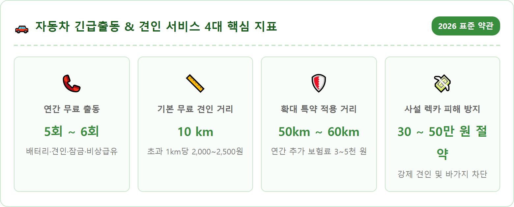
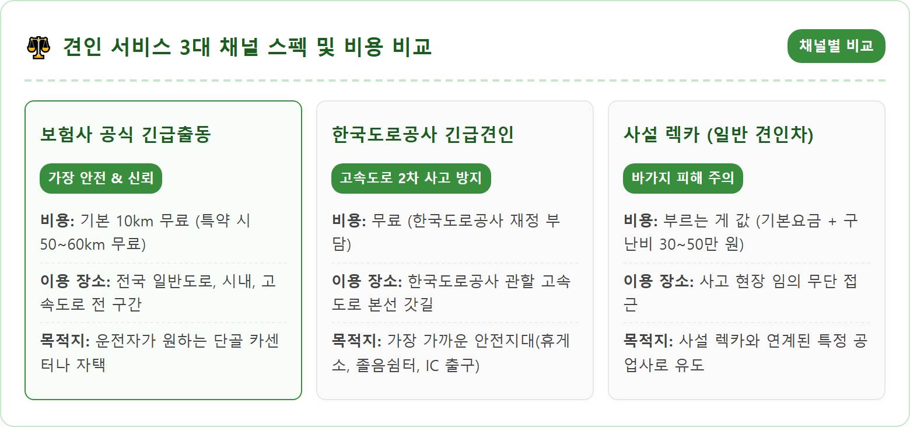
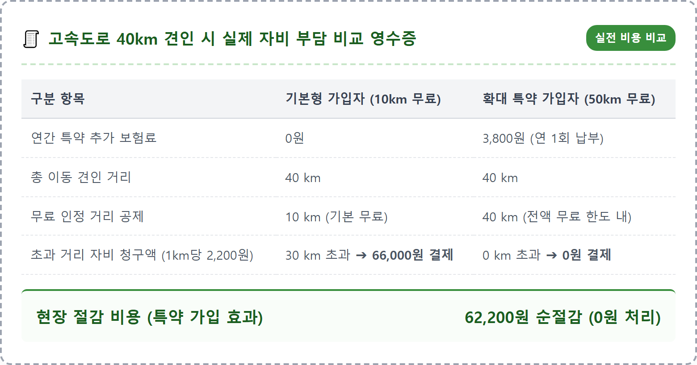
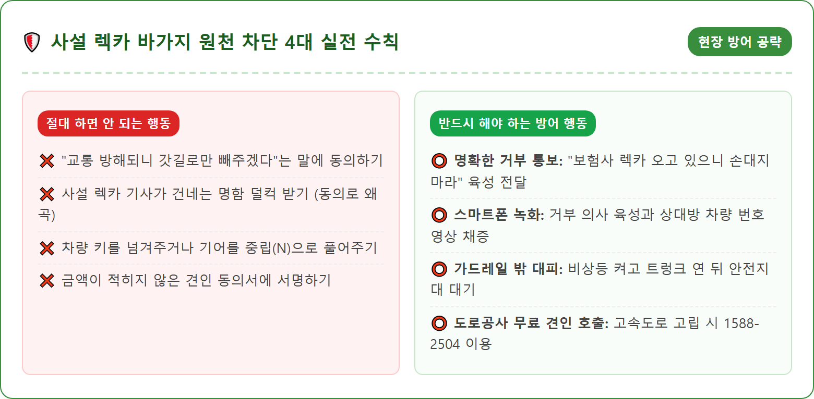
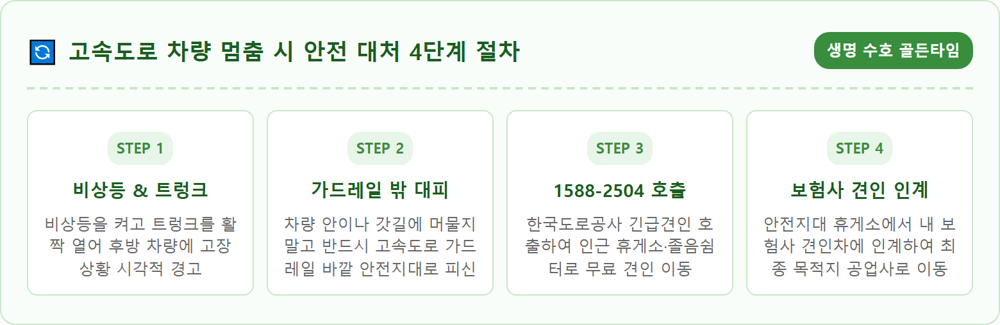
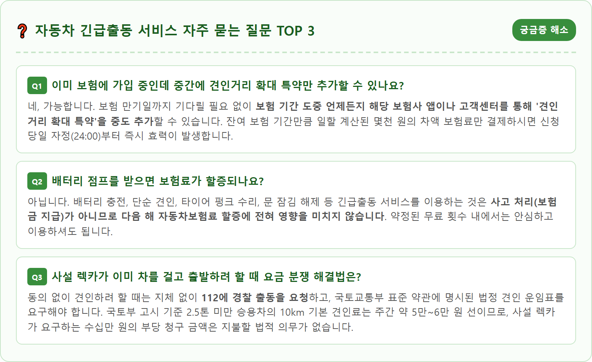

A professional, photorealistic emergency automotive assistance scene on a modern highway shoulder in South Korea during a late autumn evening. An official branded insurance flatbed tow truck with flashing amber safety lights assisting a passenger sedan safely parked behind highway guardrails. An insured driver standing in a safe zone holding a smartphone displaying an insurance mobile app. A clear orange safety warning triangle placed properly on the asphalt behind the disabled vehicle. Cinematic cool evening twilight, sharp focus, professional editorial automotive photography, 8k resolution, 1:1 aspect ratio.

기온이 뚝 떨어지는 11월 중순부터 겨울철에 접어들면 차량 배터리 성능이 급격히 저하되고, 빙판길 미끄러짐이나 타이어 펑크 등 예기치 못한 비상 상황이 빈번하게 발생합니다. 이때 운전자에게 가장 든든한 구원투수가 바로 자동차보험 가입 시 선택하는 '긴급출동 서비스 특약'입니다.
긴급출동 특약은 보통 1년 보험 기간 동안 5회 또는 6회의 무료 이용 횟수가 부여되며, 다음과 같은 6대 핵심 응급조치를 제공합니다. 첫째, 겨울철 가장 빈번한 **'배터리 충전(점프)'** 서비스입니다. 방전된 차량에 점프선을 연결해 즉시 시동을 걸어줍니다. 둘째, **'비상 급유'**로 도로 위 연료 소진 시 1일 1회 3리터(LPG의 경우 10km 견인)를 무료 주유해 줍니다.
셋째, **'타이어 펑크 수리'**로 단순 트레드 못 박힘 시 1부위 지렁이 패치를 무료 시공해 줍니다. 넷째, 스마트키를 차 안에 두고 잠겼을 때 문을 열어주는 **'잠금장치 해제'**(특수 수입차 제외), 다섯째, 눈길이나 모래밭에 바퀴가 빠졌을 때 빼내 주는 **'긴급 구난'**, 마지막으로 자력 주행이 불가능할 때 공업사로 차를 옮겨주는 **'비상 견인'** 서비스입니다.
"올해 배터리 방전으로 두 번 불렀던 것 같은데 아직 몇 번이나 남았을까?" 긴급 상황이 닥쳤을 때 무료 횟수가 남아 있는지 모르면 불안할 수밖에 없습니다. 무료 횟수를 모두 소진한 상태에서 출동을 부르면 건당 2만~3만 원 이상의 유료 비용이 청구되기 때문입니다.
잔여 횟수를 확인하는 가장 빠른 방법은 가입하신 보험사(삼성화재, 현대해상, DB손해보험, KB손해보험 등)의 **모바일 스마트폰 앱**에 접속하는 것입니다. 공동인증서나 간편인증으로 로그인한 뒤, [MY PAGE(마이페이지)] ➔ [계약 조회/관리] ➔ [자동차보험 증권] ➔ [긴급출동 서비스 이용 내역] 메뉴로 들어가시면 됩니다.
이 화면에서는 올해 총 부여된 횟수(예: 6회) 중 지금까지 사용한 날짜와 서비스 종류(배터리 2회, 펑크 1회 등), 그리고 현재 남아 있는 **잔여 횟수(예: 3회 남음)**가 명확하게 표시됩니다. 앱 사용이 어려운 분들은 보험사 대표 고객센터(콜센터)에 전화를 걸어 주민번호와 차량번호를 입력하면 상담원 연결 없이도 ARS 음성을 통해 잔여 횟수를 즉시 안내받을 수 있습니다.

대부분의 운전자가 자동차보험에 가입할 때 무심코 지나치는 치명적인 함정이 바로 '기본 견인 거리 10km'입니다. 자동차보험의 기본 긴급출동 약관은 1회 견인 시 단 10km까지만 무료로 제공합니다.
도심 시내 주행 중이라면 10km 이내에 인근 정비소가 있겠지만, 고속도로나 국도, 주말 교외 드라이브 중 차량이 퍼졌을 때는 상황이 완전히 달라집니다. 고속도로 한복판에서 가장 가까운 정비 공업사나 서비스센터까지의 거리는 30~40km를 훌쩍 넘기 일쑤입니다. 기본 10km를 초과하게 되면 **1km당 2,000~2,500원**의 추가 견인 요금을 현장에서 운전자가 고스란히 현금이나 카드로 자비 부담해야 합니다. 40km를 견인하면 30km 초과분에 대해 약 6만~8만 원의 생돈이 깨지는 셈입니다.
이를 완벽하게 방어해 주는 제도가 바로 **'견인 거리 확대 특약'**입니다. 보험사마다 명칭은 조금씩 다르지만(견인거리확대, 긴급출동 플러스 등), 1년 추가 보험료가 **단돈 3,000~5,000원(월 300~400원 꼴)**에 불과합니다. 이 특약에 가입하면 무료 견인 거리가 기존 10km에서 **50km, 60km, 혹은 전기차의 경우 최대 100km까지 대폭 확대**됩니다. 내가 신뢰하는 거주지 인근 단골 정비소나 제조사 공식 직영 서비스센터까지 추가 비용 0원으로 편안하게 차를 견인할 수 있는 최고의 필수 특약입니다.

도로 위에서 가벼운 접촉사고가 나거나 차가 멈춰 서면, 보험사 출동 기사보다 훨씬 먼저 경광등을 번쩍이며 굉음을 내고 나타나는 것이 바로 '사설 렉카(민간 구난차)'들입니다. 교통경찰 무전을 도청하거나 제보를 받고 출동하는 이들은 당황한 운전자에게 접근하여 상상을 초월하는 견인비 폭탄을 안깁니다.
사설 렉카 기사들의 단골 멘트는 정해져 있습니다. "길이 너무 막혀서 2차 사고 나니까 안전한 갓길로 10미터만 차를 빼주겠다", "도로공사에서 무료로 지원 나온 차니 걱정 마라"면서 운전자가 경황이 없는 틈을 타 차량 앞바퀴 밑에 잽싸게 견인 고리(갈고리)를 걸어버립니다. 일단 갈고리가 걸리고 바퀴가 들리는 순간, 단 50미터를 이동하고도 "특수 구난 작업비, 대기료, 위험수당" 등의 명목으로 30만~50만 원의 터무니없는 바가지 영수증을 들이밉니다.
이러한 피해를 완벽하게 차단하려면 다음 3단계 방어 전술을 단호하게 실행해야 합니다. 첫째, 사설 렉카가 다가오면 창문을 살짝만 내리고 **"보험사 견인차를 이미 불렀으니 제 차에 절대로 손대지 마세요"**라고 큰 소리로 명확한 거부 의사를 밝힙니다. 둘째, **스마트폰 동영상 녹화나 음성 녹음 기능을 켜고** 운전자의 거부 의사와 상대방 얼굴, 차량 번호판을 함께 촬영해 증거를 남깁니다. 셋째, 사설 렉카 기사가 건네는 명함은 절대로 받지 마시고, 상대방이 차를 만지려 하면 "동의 없는 강제 견인은 형법상 재물손괴 및 권리행사방해죄로 112에 즉시 신고하겠다"고 단호하게 경고해야 합니다.

고속도로 한복판에서 차가 멈추었을 때 가장 무서운 것은 바로 뒤따라오는 대형 화물차에 의한 '2차 치사 사고'입니다. 고속도로 2차 사고의 치사율은 일반 사고의 5~6배에 달할 정도로 치명적입니다. 보험사 견인차가 도착하기까지 30분 이상 걸릴 것으로 예상된다면 주저하지 말고 정부 제도를 활용해야 합니다.
한국도로공사에서는 고속도로 본선이나 갓길에 멈춰 선 고장·사고 차량을 위해 **'고속도로 긴급견인 서비스'**를 24시간 연중무휴 무료로 운영하고 있습니다. 전화번호는 **한국도로공사 콜센터 ☎ 1588-2504**입니다.
전화를 걸어 고속도로 노선명과 현재 지나친 이정표 번호를 알려주면, 공사와 협약된 견인차가 즉각 출동하여 차량을 **가장 가까운 안전지대(인근 휴게소, 졸음쉼터, 영업소 IC 출구 밖)까지 전액 무료(비용 0원)**로 안전하게 옮겨줍니다. 안전지대로 차를 옮겨놓은 뒤, 그곳에서 대기하고 있던 내 보험사 긴급출동 견인차로 갈아타서 단골 정비소로 이동하면 위험도 없고 비용도 전혀 발생하지 않는 가장 완벽한 위기 대처가 완성됩니다.

갑작스러운 비상 상황에 처하면 가입한 보험사 이름조차 가물가물할 수 있습니다. 당황하지 않도록 국내 주요 손해보험사의 24시간 긴급출동 다이렉트 대표 번호를 스마트폰 전화번호부에 미리 단축키로 저장해 두시는 것이 좋습니다.
삼성화재(☎ 1588-5114), 현대해상(☎ 1588-5656), DB손해보험(☎ 1588-0100), KB손해보험(☎ 1544-0114), 메리츠화재(☎ 1566-7711), 한화손해보험(☎ 1566-8000), 캐롯손해보험(☎ 1566-0300) 등 주요 손보사들은 모두 24시간 전담 긴급출동 데스크를 가동하고 있습니다.
전화 통화보다 더 편리한 것은 각 보험사의 스마트폰 모바일 앱을 통한 **'원클릭 긴급출동 접수'**입니다. 앱을 켜고 출동 버튼을 누르면 스마트폰의 GPS 위치 정보가 보험사 관제 시스템으로 자동 전송되므로, 낯선 시골길이나 고속도로에서 본인의 위치를 복잡하게 설명할 필요 없이 출동 기사가 오차 없이 정확하게 찾아옵니다. 출동 기사의 현재 이동 위치와 도착 예정 시간도 배달 앱처럼 지도 화면에서 실시간으로 확인할 수 있어 대기 불안감을 덜 수 있습니다.

겨울철 기온이 영하 5도 이하로 떨어지면 자동차 배터리 내부의 화학 반응성이 둔화하면서 시동 전압이 평소의 50~60% 수준으로 급감합니다. 특히 블랙박스를 주차 중 24시간 상시 녹화로 켜두는 차량은 2~3일만 운행하지 않아도 쉽게 방전됩니다.
배터리 방전을 예방하려면 겨울철 블랙박스 설정을 '저전압 차단 전압'을 평소 11.8V에서 **12.2V~12.4V**로 상향 조정하거나, 주차 녹화 모드를 끄고 모션 감지 대신 충격 감지로 변경하는 것이 좋습니다. 또한 야외 노출 주차보다는 지하 주차장 안쪽에 차를 대고, 영하 10도 이하의 한파 예보가 있을 때는 배터리 상부에 보온 패드나 헌 옷을 덮어두는 것도 도움이 됩니다.
만약 시동 버튼을 눌렀을 때 "딸깍딸깍" 소리만 나고 계기판 불빛이 흐려진다면 전형적인 배터리 방전입니다. 보험사 긴급출동 기사를 부른 후 점프 시동을 걸었다면, **시동을 끄지 말고 최소 40분~1시간 이상 주행하거나 시동 상태를 유지**해야 알터네이터(발전기)가 배터리를 충분히 재충전할 수 있습니다. 3년 이상 사용한 배터리가 일주일 새 2회 이상 연속 방전된다면 수명이 다한 것이므로 점프만으로 버티지 마시고 신품 배터리로 교체하셔야 합니다.
주행 중 계기판에 노란색 TPMS(공기압 경고등)가 점등되거나 한쪽으로 차가 쏠린다면 타이어 펑크를 의심해야 합니다. 펑크가 났을 때 무리하게 주행을 지속하면 타이어 사이드월이 찢어지고 휠까지 찌그러져 수십만 원의 수리비가 발생하므로 즉시 안전지대에 정차해야 합니다.
보험사 긴급출동을 접수하면 기사가 출동하여 타이어 바닥면(트레드)에 박힌 못이나 볼트를 찾은 뒤, 전용 송곳으로 고무 패치(일명 지렁이)를 찔러 넣어 5분 만에 무료로 수리해 줍니다. 서비스 비용은 무료 횟수에서 1회 차감됩니다.
그러나 타이어 옆면(사이드월)이 찢어졌거나 도로 위 포트홀을 밟아 휠이 찌그러진 경우에는 현장 지렁이 패치 수리가 불가능합니다. 이때는 차량 트렁크 하부에 있는 '비상용 스페어타이어' 교체 서비스를 요청하시거나, 스페어타이어가 없는 최신 차량의 경우 즉시 견인 서비스를 요청하여 인근 타이어 전문 매장으로 이동하셔야 합니다.
차량 고장과 사고는 예고 없이 찾아오지만, 사전에 준비된 운전자에게는 큰 재정적 손실이나 위협이 되지 못합니다.
매년 자동차보험을 갱신할 때 다이렉트 화면에서 몇천 원을 아끼겠다고 긴급출동 특약을 빼거나 기본 10km 견인으로 방치하지 마시고, 반드시 **'견인 거리 50km 이상 확대 특약'**을 체크하는 습관을 들이시기 바랍니다.
아래 표에 정리된 긴급 연락망과 핵심 수칙을 캡처해 두시고, 겨울철 장거리 주행 전 타이어 공기압과 배터리 전압을 점검하여 안전하고 편안한 드라이빙을 이어가시길 바랍니다.
| 기관 및 서비스 | 대표 전화번호 | 주요 지원 내용 |
|---|---|---|
| 한국도로공사 | ☎ 1588-2504 | 고속도로 갓길 멈춤 시 인근 안전지대까지 전액 무료 견인 |
| 삼성화재 애니카 | ☎ 1588-5114 | 배터리 점프, 비상 급유, 펑크 수리, 견인 출동 |
| 현대해상 하이카 | ☎ 1588-5656 | 모바일 앱 원클릭 접수 및 GPS 기반 위치 자동 전송 |
| DB손해보험 프로미 | ☎ 1588-0100 | 프로미카 긴급출동 및 긴급 구난 서비스 지원 |
| KB손해보험 매직카 | ☎ 1544-0114 | 매직카 서비스 잔여 횟수 실시간 조회 및 현장 출동 |